토목기사 (2007-03-04 기출문제)
1과목: 응용역학
1. 그림과 같이 반지름 r인 원에서 r을 지름으로 하는 작은 원을 도려낸, 빗금친 부분의 도심의 x좌표는?
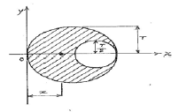
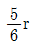
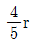
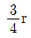
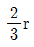
(정답률: 77%)

2. 다음 그림에서 두 힘 P1, P2의 합력 R을 구하면?
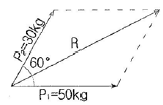
- 70kg
- 80kg
- 90kg
- 100kg
(정답률: 73%)
3. 다른 조건이 같을 때 양단고정 기둥의 좌굴하중은 양단힌지 기둥의 좌굴하중의 몇 배인가?
- 1.5배
- 2배
- 3배
- 4배
(정답률: 74%)
4. 그림과 같이 트러스에 하중이 작용할 때 BD의 부재력을 구한 값은?
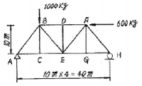
- 600 kg (압축)
- 700 kg (인장)
- 800 kg (압축)
- 700 kg (압축)
(정답률: 43%)
5. 다음 구조물에서 B점의 수평 방향 반력 RB를 구한값은? (단, EI는 일정)
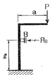
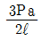
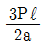
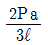
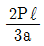
(정답률: 64%)
6. 내민보의 굽힘으로 인하여 저장된 변형 에너지는? (단, EI는 일정하다.)
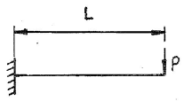
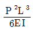
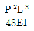
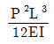
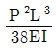
(정답률: 71%)
7. 다음 구조물에 생기는 최대 부모멘트의 크기는? (단, C점에 내부힌지가 있는 구조물이다.)
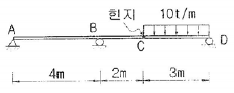
- -11.3 t∙m
- -15.0 t∙m
- -30.0 t∙m
- -45.0 t∙m
(정답률: 45%)
8. 다음 그림에서 B점의 고정단 모멘트는?
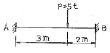
- 3 t∙m
- 4 t∙m
- 2.5 t∙m
- 3.6 t∙m
(정답률: 48%)
9. 그림과 같이 단순 지지된 보에 등분포하중 q가 작용하고 있다. 지점 C의 부모멘트와 보의 중앙에 발생하는 정모멘트의 크기를 같게 하여 등분포하중 q의크기를 제한하려고 한다. 지점 C와 D는 보의 대칭거동을 유지하기 위하여 각각 A와 B로부터 같은 거리에 배치하고자 한다. 이때 보의 A점으로부터지점 C의 거리 x는?
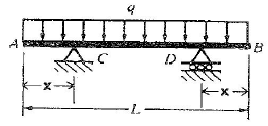
- x= 0.207 L
- x= 2.550 L
- x= 0.333 L
- x= 0.444 L
(정답률: 69%)
10. 그림의 보에서 상반작용(相反作用)의 원리가 옳은 것은?
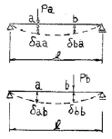
- Paδaa=Pbδbb
- Paδab=Pbδba
- Paδba=Pbδab
- Paδbb=Pbδaa
(정답률: 50%)
11. 다음 그림에서 점 C에 하중 P가 작용할 때 A점에 작용하는 반력 RA는? (단, 재료의 단면적은 A1, A2 이고, 기타 재료의 성질은 동일하다.)
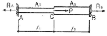
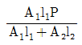
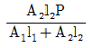
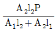
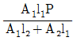
(정답률: 36%)
12. 다음과 같은 부재에 발생할 수 있는 최대 전단은 력은?
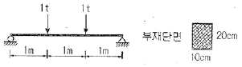
- 6kg/cm2
- 6.5kg/cm2
- 7.0kg/cm2
- 7.5kg/cm2
(정답률: 64%)
13. 다음중 정(+)의 값 뿐만 아니라 부(-)의 값도 갖는것은?
- 단면계수
- 단면 2차모멘트
- 단면 2차 변경
- 단면 상승 모멘트
(정답률: 69%)
14. 그림과 같은 보의 지점 A에 10 t∙m 의 모멘트가 작용하면 B점에 발생하는 모멘트의 크기는?
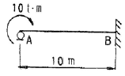
- 1t∙m
- 2.5t∙m
- 5t∙m
- 10t∙m
(정답률: 48%)
15. 지름 5cm 의 강봉을 8t로 당길 때 지름은 약 얼마나 줄어들겠는가?
- 0.00029 cm
- 0.0⑤7 cm
- 0.000012 cm
- 0.003 cm
(정답률: 35%)
16. 그림과 같은 단순보에서 B 단에 모멘트 하중 M 이 작용할 때 경간 AB 중에서 수직 처짐이 최대가 되는 곳의 거리 x는? (단, EI는 일정하다.)
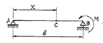
- x=0.500ℓ
- x=0.577ℓ
- x=0.667ℓ
- x=0.750ℓ
(정답률: 85%)
17. 그림의 라멘에서 수평반력 H를 구한 값은?
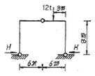
- 9.0 t
- 4.5 t
- 3.0 t
- 2.25 t
(정답률: 67%)
18. 다음 부정정보의 b eksdl ℓ*만큼 아래로 저졌다면 a 단에 생기는 모멘트는? (단, ℓ*/ℓ=1/600이다.)
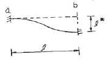
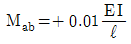
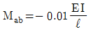
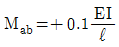
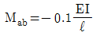
(정답률: 46%)
19. 그림과 같이 a x2a의 단면을 갖는 기둥에 편 심거리 a/2만큼 떨어져서 P가 작용할 때 기둥에 발생할 수 있는 최대 압축응력은?(단, 기둥은 단 주이다.)
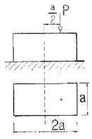
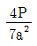
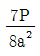
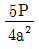
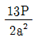
(정답률: 40%)
20. 다음 그림과 같은 캔틸레보에서 자유단(B점)의 수직처짐(δVB)과 처짐각(θC)은? (단, EI는 일정하다.)
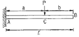
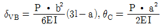
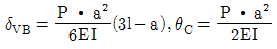
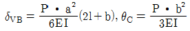
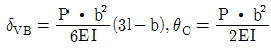
(정답률: 52%)
2과목: 측량학
21. 다음은 다각측량 결과 얻어진 좌표의 값이다. 합위거, 합경거의 방법으로 면적을 계산하면? (단, 단위는 m임)
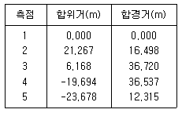
- 441.23 m2
- 882.46 m2
- 1125.14 m2
- 2250.28 m2
(정답률: 48%)
22. 수심(H)인 하천의 유속측정에서 수면으로부터 깊이 0.2H, 0.6H, 0.8H인 점의 유속이 각각0.663m/sec, 0.532m/sec, 0.467m/sec 이었다. 3점 법으로 계산한 평균유속은?
- 0.565 m/sec
- 0.554 m/sec
- 0.549 m/sec
- 0.500 m/sec
(정답률: 77%)
23. 노선설치에서 단 곡선을 설치할 때 곡선의 중앙종거(M)를 구하는 식은?
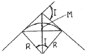
- M = R X (1-cos1/2)
- M = R tan1/2
- M = 2R sin1/2
- M = R X(sec1/2-1)
(정답률: 62%)
24. 노선에 곡선반지름 R=600m 인 곡선을 설치할 때, 현의 길이 ℓ=20m에 대한 편각은?
- 54‘ 18“
- 55’18”
- 56‘ 18“
- 57’18”
(정답률: 43%)
25. 도면에서 곡선에 둘러싸여 있는 부분의 면적은 다음 어느 방법으로 구하는 것이 가장 적당한가?
- 좌표법에 의한 방법
- 배횡거법에 의한 방법
- 삼사법에 의한 방법
- 구적기에 의한 방법
(정답률: 61%)
26. 축척 1/1000의 단위면적이 5m2 일 때 이것을 이용하여 1/3000 의 축척에 대한 면적을 구할 경우의단위면적은?
- 45 m2
- 40 m2
- 35 m2
- 0.6 m2
(정답률: 46%)
27. 물탱크의 부피를 구하기 위해 측량하여 다음을 얻었다. 부피와 이에 포함된 오차는?
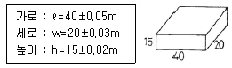
- 11951±0.⑤m3
- 11951±49m3
- 12000±28.4m3
- 12000±14.2m3
(정답률: 18%)
28. 사진의 기하학적 성질 중 공간상의 임의의 점(Xp, Yp, Zp)과 그에 대응하는 사진 상의 점(x, y) 및 사진기의 촬영 중 심 0(Xo, Yo, Zo)이 동일 직선상에 있어야 하는 조건은?
- 수렴 조건
- 샤임 플러그 조건
- 공선 조건
- 소실점 조건
(정답률: 59%)
29. 다음 삼변측량에 관한 설명 중 틀린 것은?
- 관측요소는 변의 길이 뿐이다.
- 관측 값에 비하여 조건식이 적은 단점이 있다.
- 삼각형의 내각을 구하기 위해 cosine 제2법칙을 이용한다.
- 반각공식을 이용하여 각으로부터 변을 구하여 수직위치를 구한다.
(정답률: 52%)
30. 평판측량에서 평판을 정치하는데 생기는 오차 중 가장 큰 오차는?
- 수평 맞추기가 잘못 되었을 때
- 중심 맞추기가 잘못 되었을 때
- 방사법으로 시행할 때
- 방향 맞추기가 잘못 되었을 때
(정답률: 32%)
31. 트래버스측량에서 측선의 전장=2500m, 위거의 오차=0.30m, 경거의 오차=0.40m일 때에 폐합 비는?
- 1/4500
- 1/5000
- 1/5500
- 1/6000
(정답률: 63%)
32. 그림과 같이 교각 60°의 두 직선 사이에 반경 R= 300m의, 원곡선을 설치할 때 접선장 T의 길이는?
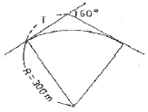
- 81.603 m
- 173.2⑤ m
- 346. 410 m
- 519. 615 m
(정답률: 64%)
33. 삼각측량의 각 삼각점에 있어 모든 각의 관측시 만족 되어야 하는 조건이 아닌 것은?
- 하나의 측점을 둘러싸고 있는 각의 합은 360°가 되도록 한다.
- 삼각망 중에서 임의의 한변의 길이는 계산의 순서에 관계없이 동일하도록 한다.
- 삼각망 중 각각 삼각형 내각의 합은 180°가 되도록 한다.
- 모든 삼각점의 포함면적은 각각 일정해야 한다.
(정답률: 57%)
34. 촬영고도 800m의 연직사진에서 높이 20m에 대한 시차 차의 크기는 얼마인가? (단, 초점거리는 21cm, 화면크기는 23x23cm, 종중복도는 60%이다.)
- 0.8mm
- 1.3mm
- 1.8mm
- 2.3mm
(정답률: 46%)
35. A, B 간의 비고를 구하기 위해 (1), (2), (3)경로에 대하여 직접고저측량을 실시하여 다음과 같은 결과를 얻었다. A, B 간은 고저 차의 최확값은?
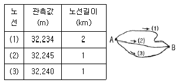
- 32.236m
- 32.238m
- 32.241m
- 32.243m
(정답률: 67%)
36. 노선측량에 관한 설명 중 잘못된 것은?
- 노선측량이란 수평곡선, 종곡선, 완화곡선 등을 계산하고 측설 하는 측량이다.
- 곡률이 곡선길이에 반비례하는 곡선을 클로소이드 곡선이라 한다.
- 완화곡선에 연한 곡선반경의 감소율은 캔트의 증가율과 같다.
- 완화곡선의 반경은 시점에서 무한대이고 종점에서는 왼 곡선의 반지름이 된다.
(정답률: 64%)
37. 비행고도가 일정할 때 보통각, 광각, 초광각 등세 가지 카메라로 사진을 찍었을 때 사진축척이 가장 큰 것은?
- 보통각
- 광각
- 초광각
- 카메라의 종류와는 무관하다.
(정답률: 19%)
38. 상차라고도 하며 그 크기와 방향(부호)이 불규칙적으로 발생하고 확률론에 의해 추정할 수 있는오차는?
- 착오
- 정오차
- 우연오차
- 개인오차
(정답률: 77%)
39. 삼각측량에서 시간과 경비가 많이 소요되나 가장 정밀한 측량성과를 얻을 수 있는 삼각망은?
- 유심망
- 단삼각형
- 단열삼각망
- 사변형망
(정답률: 67%)
40. 직접 수준측량을 실시한 결과가 다음과 같다. C점의 지반고가 50.000m일 때 A점의 지반 고는?
- 51.395 m
- 54.710 m
- 56.108 m
- 57.236 m
(정답률: 40%)
3과목: 수리학 및 수문학
41. 그림과 같이 물을 막고 있는 원통의 축방향 1m에 작용하는 전 수압은?
- 2 ton
- 1.57 ton
- 3.57 ton
- 2.54 ton
(정답률: 15%)
42. IDF곡선의 강우강도와 지속기간의 관계에서 Talbot형으로 표시된 식은?? (단, I는 강우강도, t는 지속기간, T는 생기빈도(지속기간)이고 a, b, c, d, e, n, k, x는 지역에 따라 다른 값을 갖는 상수)
(정답률: 50%)
43. 다음 그림과 같은 사다리꼴 수로에서 수리상 유리한 단면으로 설계된 경우의 조건은?
- OC = OG +OA = OE
- OA = OD = OG
- OB = OD = OF
- OA = OC = OE = OG
(정답률: 62%)
44. 개수로 내의 정상류의 수심을 y, 한계수심과 한계 경사를 각각 yc, Sc, 수로의 경사를 S, 흐름의 Froude 수를 Fr이라 할 때 다음 중 옳지 않은 것은 ?
- y ＞c 이면 Fr ＜ 1, S ＜ Sc
- y ＜ yc 이면 Fr ＞ 1, S ＞ Sc
- y ＞ yc 이면 Fr ＞ 1, S ＜ Sc
- y = yc 이면 Fr = 1, S = Sc
(정답률: 30%)
45. 다음 중 DAD 해석시 가장 불필요한 것은?
- 자기우량 기록지
- 구적기
- 최대 강우량 기록
- 상대 습도
(정답률: 50%)
46. 관수로 내의 층류 흐름에 관한 설 명중 옳은 것은?
- 속도분포는 포물선이며, 유량은 지름의 4제곱에 반비례한다.
- 속도분포는 대수분포 곡선이며, 유량은 압력강하량에 반비례한다.
- 마찰응력 분포는 포물선이며, 유량은 점성계수와 관의 길이에 반비례한다.
- 속도분포는 포물선이며, 유량은 압력강하량에 비례한다.
(정답률: 44%)
47. 직사각형 단면의 위어에서 수두(h)를 측정함에 있어서 2%의 오차가 발생했다면 유량(Q)은 몇 %의 오차가 있겠는가?
- 1 %
- 2 %
- 3 %
- 4 %
(정답률: 54%)
48. 깊은 우물과 얕은 우물의 설명으로 옳지 않은 것은?
- 깊은 우물은 바닥이 불투수층까지 도달한 우물이다.
- 얕은 우물은 바닥이 불투수층까지 도달하였으나 그 깊이가 우물 직경에 비해 작은 우물이다.
- 깊은 우물은 물이 측벽으로만 유입된다.
- 얕은 우물은 물이 측벽 및 바닥에서 유입된다.
(정답률: 32%)
49. 수두차가 10m인 두 저수지를 직경 30cm, 조도계수 0.013인 주철관으로 연결하여 송수할 때, 관을 흐르는 유량(Q)은 얼마인가? (단, 관의 유입 및 유출, 마찰손실만 존재한다.)
- Q = 0.19m3/sec
- Q = 0.17m3 /sec
- Q = 0.08m3/sec
- Q = 0.02m3 /sec
(정답률: 23%)
50. 단위유량도(Unit hydrograph) 작성에 있어 긴 강우지속기간을 가진 단위도로부터 짧은 지속기간을 가진 단위도로 변환하기 위해서 사용하는 방법으로 맞는 것은?
- S-Curve법
- 지하수 감수곡선법
- 단위도의 비례가정법
- 단위 유량 분포도법
(정답률: 34%)
51. 다음은 수리모형 법칙을 서술한 것이다. 모형법칙과 지배인자과 잘못 연결된 것은?
- Cauchy 법칙 : 탄성력
- Reynolds 법칙 : 점성력
- Froude 법칙 : 중력
- Weber 법칙 : 압력
(정답률: 41%)
52. Darcy의 법칙에 관한 설명 중 틀린 것은?
- 흐름을 층류로 해석한다.
- 투수계수가 크면 공극률도 크다.
- 지하수 흐름의 속도는 동수경사에 비례한다.
- 투수계수는 무차원량이다.
(정답률: 53%)
53. 다음 그림과 같은 수평관이 있다. 단면 (1),(2)에서 지름, 평균유속, 수압의 세기가 각각 d1, d2, V1, V2, P1, P2라고 한다. 여기서 d1=40 cm, d2=80cm V1=4 m/sec P1=1 kg/cm2 P2는 ?
- 0.9235kg/cm2
- 10.765kg/cm2
- 923.5kg/m2
- 10765kg/m2
(정답률: 9%)
54. 다음 사항 중 옳지 않은 것은?
- 유량누가곡선의 경사가 급하면 홍수가 드물고 지하수의 하천방출이 크다.
- 수위-유량 관계곡선의 연장방법인 Stevens법은 CHezy의 유속공식을 이용한다.
- 자연하천에서 대부분 동일 수위에 대한 수위 상승시와 하강시의 유량이 다르다.
- 합리 식은 어떤 배수영역에 발생한 강우강도와 첨 두유량간 관계를 나타낸다.
(정답률: 55%)
55. 그림과 같은 원형 관로에서 D1 = 300mm, Q1 =200L / sec 이고 D2 = 200mm, V2 = 2.5m/sec/ 인 경우 D3 = 150mm에서의 유량 Q3 는?
- 121.5 L/sec
- 100.0 L/sec
- 78.5 L/sec
- 65.0 L/sec
(정답률: 53%)
56. 직사각형 단면의 수로에서 폭 1m당 유량이 0.4m3 /sec이고 수심이 0.8m일 때 비에너지는? (단, 에너지 보정계수는 1.0으로 함)
- 0.801m
- 0.813m
- 0.825m
- 0.837m
(정답률: 64%)
57. 폭이 5m인 수문을 높이 d 만큼 열었을 때 유량이 12m3/sec가 흘렀다. 이때 수문 상. 하류의 수심이 각각 6m와 2m이었다면 유량계수 C=0.6 이라 할 때 수문 개방도 d는?? (단, ω01000kg/m3)
- 0.35m
- 0.45m
- 0.57m
- 0.67m
(정답률: 20%)
58. 유수 중에 물체가 있는 경우에 흐름방향의 물체의 투영면적A, 유속V, 유체의 밀도p, 그리고 항력계수 CD라고 하면 항력D는?
- CDAρV2
(정답률: 64%)
59. 어떤 용기 속에서 압축된 액체의 압력이 1000kg/cm2 에서는 0.4m3인 체적을 압력이 2000kg/cm2 에서는 0.396m3 인 체적을 갖는다면 이 액체의 체적탄성계수는?
- 100000 kg/cm2
- 50000 kg/cm2
- 25000 kg/cm2
- 10000 kg/cm2
(정답률: 22%)
60. 다음 설명 중 옳은 것은?
- 풍수량은 1년을 통하여 85일은 이보다 더 작지 않은 유량이다.
- 평수량은 1년을 통하여 180일은 이보다 더 작지 않은 유량이다.
- 저수량은 1년을 통하여 275일은 이보다 더 작지 않은 유량이다.
- 갈수량은 1년을 통하여 350일은 이보다 더 작지 않은 유량이다.
(정답률: 27%)
4과목: 철근콘크리트 및 강구조
61. 강도 설 계법에 의할 때 단 철근 직사각형보가 균형 단면이 되기 위한 중립축의 위치 C는? (단, fy = 300MPa, d = 600mm)
- C = 400mm
- C = 293mm
- C = 494mm
- C = 390mm
(정답률: 54%)
62. 그림과 같은 단철근 직사각형ㅇ\보의 설계 휨모멘트강도(øMn)은? (단, As=2000mm2, fck=21MPa, fy=300MPa)
- 213.1KN∙m
- 266.4KN∙m
- 226.4KN∙m
- 239.8KN∙m
(정답률: 38%)
63. 복전단 고장력 볼트(bolt)의 마찰이음에서 강판에 P=350kN이 작용할 때 볼트의 수는 최소 몇 개가 필요한가? (단, 볼트의 지름 d=20mm이고, 허용전단응력 Ta=120MPa)
- 3개
- 5개
- 8개
- 10개
(정답률: 53%)
64. 강판형(plate girder)의 경제적인 높이는 다음 중 어느 것에 구해지는가?
- 전단력
- 휨모멘트
- 비틀림 모멘트
- 지압력
(정답률: 35%)
65. 전단마찰에 의한 최대 전단강도(Vn, 단위는 N)를 구하는 방법으로 옳은 것은? (단, fck은 콘크리트의 압축강도이며, Ac는 전단 전달을 저항하는 콘크리트 단면의 면적이다.)
- 0.2fck Ac 또는 5.6Ac 중작은 값
- 0.2fck Ac 또는 8.0Ac 중작은 값
- 0.25fck Ac 또는 5.6Ac 중작은 값
- 0.25fck Ac 또는 8.0Ac 중작은 값
(정답률: 25%)
66. 휨을 받는 인잔 철근으로 4-D25 철근이 배치되어 있을 경우 그림과 같은 직사각형 단면 보의 기본 정착 길이 ldb는 얼마인가? (단 철근의 직경db=25.4㎜, fck=24MPa, fy=400MPa, D25철근 1개의 단면적 = 507mm2)
- 9⑤mm
- 1150mm
- 1245mm
- 1400mm
(정답률: 50%)
67. 2방향 슬래브 설 계시 직접설게법을 적용할 수 있는 제한사항에 대한 설명 중 틀린 것은?
- 각 방향으로 3경간 이상이 연속되어야 한다.
- 모든 하중은 연직하중으로서 슬래브판 전체에 등 분포되는 것으로 간주하며, 활하중은 고정하중의 2배 이하이어야 한다.
- 연속한 기둥 중심선으로부터 기둥의 이탈은 이탈 방향 경간의 최대 30%까지 허용된다.
- 각 방향으로 연속한 받침보 중심간 경간 길이의 차이는 긴 경간의 1/3 이하이어야 한다.
(정답률: 65%)
68. 콘크리트구조설계기준(2003)에서 규정한 강도감소 계수를 잘못 기술한 것은?
- 무근 콘크리트의 휨모멘트: ø=0.65
- 전단력과 비틀림 모멘트: ø=0.70
- 콘크리트의 지압력: ø=0.70
- 축인 장력: ø=0.85
(정답률: 30%)
69. 순단 면이 볼트의 구멍 하나를 제외한 단면 (즉,A-B-C 단면)과 같도록 피치(s)의 값을 결정 하면? (단, 볼트의 직경은 19mm이다.)
- s=114.9mm
- s=90.6mm
- s=66.3mm
- s=50mm
(정답률: 64%)
70. PSC 슬래브의 강재배치에 대한 기술중 잘못된 것은?
- 1방향으로 배치된 프리스트레싱 긴장재의 간격은 슬래브 두께의 8배 이하이어야 하고, 또한 1.5m 이하로 하여야 한다.
- 2개 이상의 프리스트레싱 긴 장재를 기둥의 전단에 대한 위험단면 구간에 각 방향으로 배치하여야 한다.
- 유효 프리스트레스 힘에 의한 콘크리트의 평균 압축응력이 0.7MPa이상 되도록 프리스트레싱 긴장재의 간격을 정하여야 한다.
- 집중하중을 받는 경우 프리스트레싱 긴장재의 간격에 특별한 고려를 해야 한다.
(정답률: 27%)
71. 아래 그림과 같은 보에서 계수전단력 Vu=300kN에 대한 가장 적당한 스터럽간격은? (단, 사용된 스터럽은 철근 D13이다. 철근 D13의 단면적은 127mm2 fck=24MPa, fy=350MPa)
- 100mm
- 150mm
- 250mm
- 300mm
(정답률: 34%)
72. 강도설계에서 fck = 35MPa, fy = 350MPa 를 사용하는 단철 근보에 사용할 수 있는 최대 인장철근비는?
- 0.020
- 0.024
- 0.028
- 0.032
(정답률: 25%)
73. 옹벽의 토압 및 설계일반에 대한 설명 중 옳지 않은 것은?
- 활동에 대한 저항력은 옹벽에 작용하는 수평력의 1.5배 이상이어야 한다.
- 뒷부벽식 옹벽의 저판은 정확한 방법이 사용되지 않는 한, 3변 지지된 2방향 슬래브로 설계하여야 한다.
- 캔틸레버 옹벽의 전 면벽은 저판에 지지된 캔틸레버로 설계할 수 있다.
- 지지, 지반에 작용하는 최대 압력이 지반의 허용 지지력을 초과하지 않아야 한다.
(정답률: 44%)
74. 고정하중(D)과 활하중(L) 및 풍하중(W)이 작용하는 경우 계수하중(U)를 구하기 위해 고려되어야할 하중조합으로 옳은 것은?
- U = 1.4D+1.7L+1.7W
- U = 0.75(1.4D+1.7L+1.7W)
- U = 0.75(1.4D+1.7L+1.5W)
- U = 1.4D+1.7L+1.5W
(정답률: 14%)
75. 그림과 같은 경간 15m의 콘크리트 T형보의 대칭부의 플랜지 유효폭 b는 얼마인가?
- 3130mm
- 2500mm
- 2250mm
- 2000mm
(정답률: 34%)
76. 그림과 같은 나선철근단주의 설계 축강도 øPn을 구하면? (단, D32 1개의 단면젹=794mm2, fck=24MPa, fy=420MPa)
- 2648kN
- 2748kN
- 2848 kN
- 2948kN
(정답률: 17%)
77. 경간이 8m인 PSC보에 등분포하중 w=20kN/m가 작용 할 때 중앙 단면 콘크리트 하연에서의 응력이 0 이 되려면 강재에줄 프리스트레스힘 P는 얼마인가? (단, PS강재는 콘크리트 도심에 배치되어 있음)
- P = 2000kN
- P = 2200kN
- P = 2400kN
- P = 2600kN
(정답률: 78%)
78. 주어진 단철근보 단면에서 균열검토를 위한 유효인장 단면적(A)은 얼마인가? (단, 사용 철근은 D25-6EA이다.)(오류 신고가 접수된 문제입니다. 반드시 정답과 해설을 확인하시기 바랍니다.)
- 9000mm2
- 10000mm2
- 1200mm2
- 60000mm2
(정답률: 20%)
79. 그림의 단순지지 보에서 긴 장재는 C점에 150mm의 편차에 직선으로 배치되고, 1000kN 으로 긴장되었다. 보의 고정하중은 무시할 때 C점에서의 휨 모멘트는 약 얼마인가? (단, 긴장재의 경사가 수평압축력에 미치는 영향 및 자중은 무시한다.)
- Mc = 90kN∙m
- Mc = -150kN∙m
- Mc = 240kN∙m
- Mc = -390kN∙m
(정답률: 60%)
80. 다음과 같은 철근콘크리트 단면에서 전단철근의 보강 없이 저항할 수 있는 최대 계수전단력(Vu)은? (단, fck=21MPa, fy=400MPa)
- 73.7 kN
- 64.5 kN
- 46.1 kN
- 36.7 kN
(정답률: 19%)
5과목: 토질 및 기초
81. 흙의 함수비 측정시험을 하기 위하여 먼저 용기의 무게를 잰 결과 10g 이었다. 시료를 용기에 넣은 후 무게를 측정하니 40g, 그대로 건조시킨 후 무게는 30g 이었다. 이 흙의 함수비는?
- 25%
- 30%
- 50%
- 75%
(정답률: 34%)
82. 다음 그림과 같이 점토질 지반에 연속기초가 설치되어 있다. Terzaghi 공식에 의한 이 기초의 허용 지지력 qa는 얼마인가? (단, ø=0이며, Nc=5.14, Nq=1.0, Nr=0, 안전율 Fs=3이다.)
- 6.4 t/m2
- 13.5 t/m2
- 18.5 t/m2
- 40.49 t/m2
(정답률: 48%)
83. 다음은 흙의 강도에 관한 설명이다. 다음 설 명중 옳지 않은 것은?
- 모래는 점토보다 내부마찰각이 크다.
- 일축압축시험 방법은 모래에 적합한 방법이다.
- 연약점토 지반의 현장시험에는 Vane전단시험이 많이 이용된다.
- 예민비란 교란되지 않은 공시체의 일축압축강도에 대한 다시 반죽한 공시체의 일축압축강도의 비를 말한다.
(정답률: 27%)
84. 그림과 같은 옹벽에 작용하는 전주동토압은 얼마 인가? (단, 흙의 단위 중량 r=1.7t/m3,내부마찰각=30˚, 점착력 C =0)
- 3.6 t/m
- 4.53 t/m
- 7.2 t/m
- 50 t/m
(정답률: 30%)
85. 단동식 증기 해머로 말뚝을 박았다. 해머의 무게2.5 ton, 낙하고 3m, 탁격당 말뚝의 평균 관 입량 1cm, 안전율 6일때 Engineering-News 공식으로 허용지지력을 구하면 얼마인가?
- 250 ton
- 200 ton
- 100 ton
- 50 ton
(정답률: 32%)
86. 간극비가 0.7 이고 입자의 비중이 2.70 인 모래지반에서 Quick Sand 현상에 대한 안전율을 4로 하면 이 지반에서 허용되는 최대 동수경사는?
- 0.⑤
- 0.25
- 1.42
- 4.01
(정답률: 41%)
87. 점토층의 두께 5m, 간 극비 1.4, 액성한계 50%이고 점토층위의 유효상재 압력이 10t/m2에서14t/m2으로 증가할 때의 침하량은? (단, 압축지수는 흐트러지지 않은 시료에 대한Terzaghi & Peck의 경험식을 사용하여 구한다.)
- 8 cm
- 11cm
- 24 cm
- 36cm
(정답률: 32%)
88. 두께 1m인 흙의 간극에 물이 흐른다. a - a면과 b - b면에 피에조미터를 세웠을 때 그 수두차가 0.1m이었다면 다음중 가장 올바른 설명은?
- 물은 a - a면에서 b - b면으로 흐르는데 그 침투압은 1t/m2이다.
- 물은 b - b면에서 a - a면으로 흐르는데 그 침투압은 1t/m2이다.
- 물은 a - a면에서 b - b면으로 흐르는데 그 침투압은 0.1t/m2이다.
- 물은 b - b면에서 a - 면으로 흐르는데 그 침투압은 0.1t/m2이다.
(정답률: 29%)
89. 아래 그림에서 지표면에서 깊이 6m에서의 연직응력(σv)과 수평응력(σh)의 크기를 구하면?
- σv=12.34t/m2, σh=7.4t/m2
- σv=8.73t/m2, σh=5.24t/m2
- σv=11.22t/m2, σh=6.73t/m2
- σv=9.52t/m2, σh=5.71t/m2
(정답률: 56%)
90. 점토지반에서 연직방향 압밀계수 Cv는 수평방향 압밀계수 Ch보다 작지만 샌드 드레인 공법에서는 설계시 보통 Cv = Ch로 본다. 그 이유는?
- sand mat를 깔았기 때문에
- sand 말뚝 타입시 주변의 지반이 교란되기 때문에
- 얇은 모래층이 점토지반에 존재하고 있기 때문에
- 압밀계산결과에 전혀 차가 없기 때문에
(정답률: 50%)
91. 그림과 같은 사면에서 깊이 6m 위치에서 발생하는 단위폭당 전단응력은 얼마인가?
- 5.32 t/m2
- 2.34 t/m2
- 4.⑤ t/m2
- 2.04 t/m2
(정답률: 48%)
92. 그림과 같이 지하수위가 지표와 일치한 연약점토 지반위에 양질의 흙으로 매립 성토할 때 매립이 끝난 매립후 지표로부터 5m 깊이에서의 과잉 간극수압은 약 얼마인가?
- 9.0 t/m2
- 7.9 t/m2
- 5.4 t/m2
- 3.4 t/m2
(정답률: 17%)
93. 점착력이 0.1kg/cm2 , 내부마찰각이 30°인 흙에 수직응력 20kg/cm2를 가할 경우 전단응력은?
- 20.1 kg/cm2
- 6.76 kg/cm2
- 1.16 kg/cm2
- 11.65 kg/cm2
(정답률: 50%)
94. 연약지반 처리공법중 sand drain 공법에서 연직과 방사선 방향을 고려한 평균 압밀도 U는? (단, Uv = 0.20, UR = 0.71이다.)
- 0.573
- 0.697
- 0.712
- 0.768
(정답률: 56%)
95. 비중이 2.70 이며 함수비가 25%인 어느 현장 사질토 5m3의 무게가 8.0t이었다. 이 사질토를 최대로 조밀하게 다졌을 때와 최대로 느슨한 상태의 간극비가 각각 0.8과 1.20 이었다. 이 현장 모래의 상대밀도는?
- 22.5%
- 32.5%
- 42.5%
- 52.5%
(정답률: 43%)
96. 높이 15cm, 지름 10cm인 모래시료에 정수위 투수 시험한 결과 정수두 30cm로 하여 10초간의 유출량이 60.8cm3였다. 이 시료의 투수계수는?
- 8×10-2㎝/sec
- 8×10-3㎝/sec
- 4×10-2㎝/sec
- 4×10-3㎝/sec
(정답률: 39%)
97. 흙의 다짐에 관한 설명 중 옳지 않은 것은?
- 조립토는 세립 토보다 최적함수비가 작다.
- 최대 건조단위중량이 큰 흙일수록 최적함수비는 작은 것이 보통이다.
- 점성토 지반을 다질 때는 진동 로울러로 다지는 것이 유리하다.
- 일반적으로 다짐 에너지를 크게 할수록 최대 건조 단위 중량은 커지고 최적함수비는 줄어든다.
(정답률: 56%)
98. 흙의 다짐에 있어 램머의 중량이 2.5kg, 낙하고 30cm, 3층으로 각층 다짐회수가 25회 일때 다짐 에너지는?
- 5.63kg∙cm/cm3
- 5.96kg∙cm/cm3
- 10.45kg∙cm/cm3
- 0.66kg∙cm/cm3
(정답률: 58%)
99. 모래 치환법에 의한 현장 흙의 밀도 시험에서 모래는 무엇을 구하기 위하여 쓰이는가?
- 시험구멍에서 파낸 흙의 중량
- 시험구멍의 체적
- 시험구멍에서 파낸 흙의 함수상태
- 시험구멍의 밑면부의 지지력
(정답률: 48%)
100. 다음 그림에서 액성지수(LI)가 0 ＜ LI ＜ 1인 구간은? (단, v : 흙의 부피, w : 함수비(%))
- a
- b
- c
- d
(정답률: 50%)
6과목: 상하수도공학
101. 강우도 (t:분), 면적 2km2, 유입시간 6분, 유출계수 0.75, 관내유속 1.2m/sec 인 경우 길이가 720m인 하수관에서 배출되는 우수량은 몇 m3/s 인가?
- 6
- 24
- 48
- 60
(정답률: 50%)
102. 우수조정지의 구조형식으로 거리가 먼 것은?
- 댐식(제방높이 15m 미만)
- 월류식
- 지하식
- 굴착식
(정답률: 31%)
103. 하수도의 효과에 대한 설명으로 적합하지 않은 것은?
- 공중위생상의 효과
- 도시환경의 개선
- 하천의 수질보전
- 토지이용의 감소
(정답률: 74%)
104. 우수배제계획에서 게획우수량을 산정할 때 고려 할 사항이 아닌 것은?
- 유출계수
- 유속계수
- 배수면적
- 확률년수
(정답률: 27%)
1⑤. 유입수량 100m3/min, 침전지용량 4,000m3, 폭20cm, 길이 50m, 수심 4m인 경우의 수면적 부하는 얼마인가?
- 720 m3/m2∙day
- 144 m3/m2∙day
- 1800 m3/m2∙day
- 6 m3/m2∙day
(정답률: 50%)
106. 상수처리를 위한 급속여과지의 여과 층인 모래층의 표준 두께는? (단, 여과모래의 유효경 0.45 ~ 0.7mm 범위)
- 5 ~ 20 cm
- 60 ~ 70 cm
- 120 ~ 130 cm
- 200 ~ 210 cm
(정답률: 61%)
107. Jar-Test는 적정 응집제의 주입량과 적정 pH를 결정하기 위한 시험이다. Jar-Test 시 응집제를 주입한 후 급속교반 후 완속교반을 하는 이유는?
- 응집제를 용해시키기 위해서
- 응집제를 고르게 섞기 위해서
- 플록이 고르게 퍼지게 하기 위해서
- 플록을 깨뜨리지 않고 성장시키기 위해서
(정답률: 64%)
108. 오수관거의 계획하수량을 결정할 때 고려하여야 할 것은?
- 계획시간최대오수량
- 계획평균오수량
- 계획우수량
- 계획시간최대오수량 + 계획우수량
(정답률: 73%)
109. 인구 10만의 도시에 급수계획을 하려고 한다. 계획 1인1일 최대급수량이 300L/인∙일 이라면 급수 보급률을 90%라 할 때, 계획1일최대급수량은?
- 36000m3/day
- 32000m3/day
- 27000m3/day
- 22000m3/day
(정답률: 49%)
110. 원형 관에서 단면적당 최대 통수 량은 어떤 조건에서 일어나는가?
- 수심이 직경의 50% 일 때
- 수심이 직경의 80% 일 때
- 수심이 직경의 94% 일 때
- 만관으로 흐를 때
(정답률: 63%)
111. 다음 하수처리 방법에 대한 설명 중 옳지 않은 것은?
- 활성슬러지법은 부유생물을 이용한 처리 방법이다.
- 호기성여상법은 부유생물을 이용한 처리 방법이다.
- 회전생물접촉법은 생물 막을 이용한 처리 방법이다.
- 산화지법은 부유생물을 이용한 처리 방법이다.
(정답률: 19%)
112. 포기조의 부피가 600m3인 처리장에 하루에 1,200m3의 하수가 유입된다. 포기시간은 얼마인가? (단, 슬러지반송은 고려하지 않는다.)
- 3 hr
- 6 hr
- 9 hr
- 12 hr
(정답률: 48%)
113. 계획오수량에 대한 설명 중 틀린 것은?
- 계획시간최대오수량은 계획 1일최대오수량의 1시간당 수량의 1.3 ~ 1.8배를 표준으로 한다.
- 계획오수량은 생활오수량, 공장폐수량 및 지하수량으로 구분할 수 있다.
- 지하수량은 1인1일평균오수량의 5~10%로 한다.
- 계획 1일 평균 오수량은 계획 1일 최대 오수량의 0~80%를 표준으로 한다.
(정답률: 52%)
114. BOD 200mg/L, 유량 600m3/day인 어느 식료품 공장폐수가 BOD 10mg/L, 유량 2m3/sec인 하천에 유입한다. 폐수가 유입되는 지점으로부터 하류10km 지점의 BOD(mg/L)는? (단, 다른 유입원은 없고, 하천의 유속0.⑤m/sec, 20˚C 탈산소계수(K1)=0.1/day이다. 상용대수기준, 20˚C 기준이며 기타 조건은 고려하지 않음)
- 6.26 mg/ L
- 7.21 mg/ L
- 3.31 mg/ L
- 4.39 mg/ L
(정답률: 17%)
115. 배수관망 계산시 시산법(try and error method)을 사용하여 관망의 유량을 계산하는 방법은?
- Hardy Cross 법
- Kutter 법
- Horton 법
- Newman 법
(정답률: 56%)
116. 우리나라의 상수도 시설기준상 여과사의 균등계수는 1.7 이하가 되도록 정하고 있다. 이때 균등 계수는 어떻게 정하는가?
- 통과백분율 90%의 입경/통과백분율 10%의 입경
- 통과백분율 60%의 입경/통과백분율 10%의 입경
- 통과백분율 90%의 입경/통과백분율 50%의 입경
- 통과백분율 60%의 입경/통과백분율 50%의 입경
(정답률: 42%)
117. 슬러지의 처분에 관한 일반적인 계통도로 알맞은 것은?
- 생슬러지-개량-농축-소화-탈수-최종처분
- 생슬러지-농축-탈수-소각-개량-최종처분
- 생슬러지-농축-탈수-개량-소각-최종처분
- 생슬러지-농축-소화-개량-탈수-최종처분
(정답률: 48%)
118. 부영양화 현상에 대한 특징을 설명한 것으로 알맞지 않은 것은?
- 사멸된 조류의 분해 작용에 의해 표수층으로부터 용존산소가 줄어든다.
- 조류합성에 의한 유기물의 증가로 COD가 증가한다.
- 일단 부영양화가 되면 회복되기 어렵다.
- 영양 염류인 인(P), 질소(N) 등의 유입을 방지하면 이 현상을 최소화 할 수 있다.
(정답률: 43%)
119. 저수지 수질보전 대책으로 타당하지 못한 것은?
- 바닥퇴적물의 준설
- 상류 유역의 오염원 관리
- 약제 살포
- 저수 유동의 최소화
(정답률: 42%)
120. 하수관거의 유속과 경사는 하류로 갈수록 어떻게 되도록 설계하여야 하는가?
- 유속 : 증가, 경사 : 감소
- 유속 : 증가, 경사 : 증가
- 유속 : 감소, 경사 : 증가
- 유속 : 감소, 경사 : 감소
(정답률: 44%)